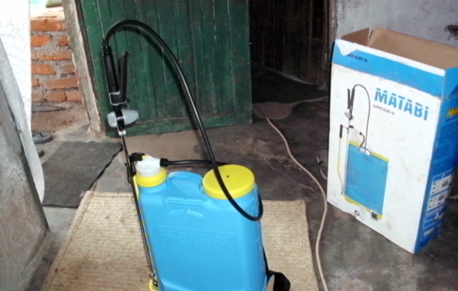
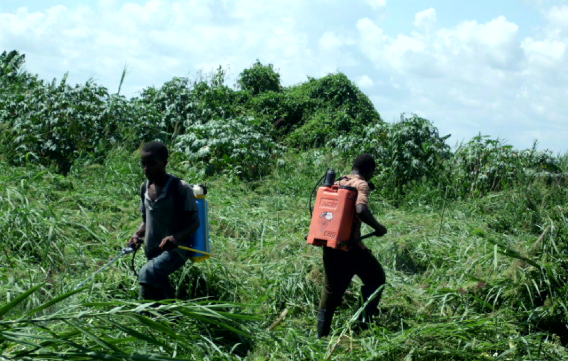
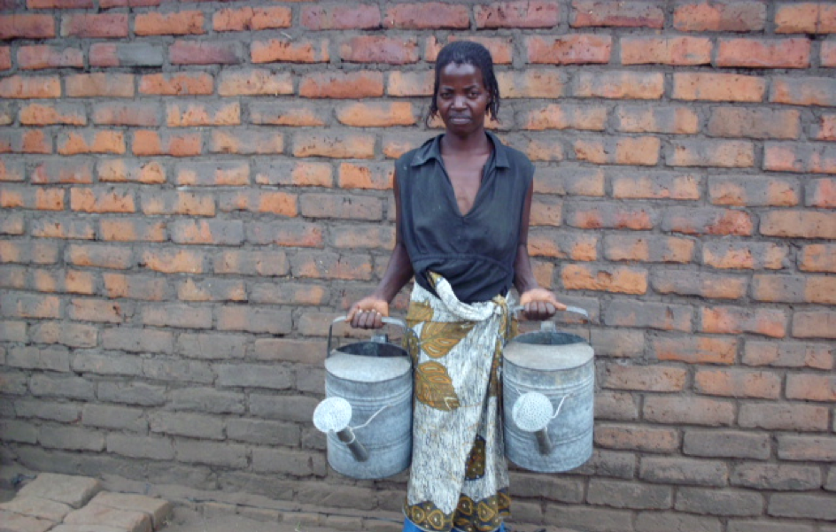
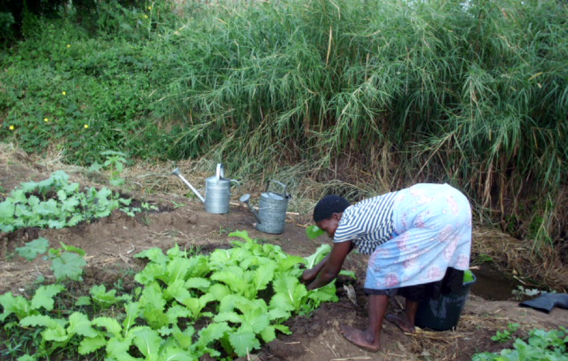

Das Projekt hat verschiedene Utensilien wie Spritzkannen und Sprays für die Bewirtschaftung der Felder angeschafft, welche von den Bewohnern ausgeliehen werden können. Nach Gebrauch müssen die Geräte wieder zurückgebracht werden, damit diese allen zu Verfügung stehen. Für die Aufbewahrung der Geräte wurde ein Schopf gebaut, welcher nun über zwei Räume verfügt, welche für das Projekt genutzt werden.
|  |  |  |
|  |